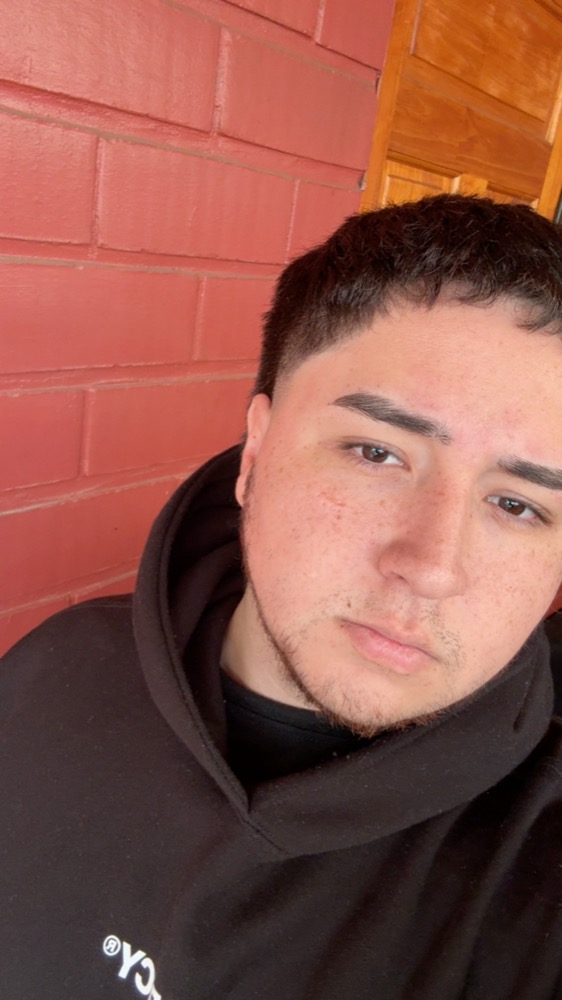

Psicoterapia basada en evidencia e informada por la neurociencia para trabajar ansiedad

Soy psicólogo con orientación clínica. Me apasiona entender cómo pensamientos, emociones, conducta y cerebro se influyen mutuamente, y usar ese conocimiento para ayudar a las personas a vivir con más calma, claridad y sentido.
Trabajo desde la terapia cognitivo-conductual (TCC) y sus desarrollos contextuales, integrando hallazgos de la neurociencia para que cada paciente entienda qué le pasa, por qué le pasa y qué puede hacer al respecto.
Creo en una terapia cercana, colaborativa y con objetivos claros: no solo hablar del problema, sino aprender herramientas que funcionen en tu vida diaria.
Un recorrido por mi preparación académica y clínica.
Universidad Santo Tomás. Formación en evaluación, diagnóstico y psicoterapia, con énfasis en psicología clínica.
Atención psicoterapéutica supervisada de adultos y jóvenes; formulación de casos, entrevista clínica y trabajo en equipo multidisciplinario.
Protocolos basados en evidencia para ansiedad y depresión, reestructuración cognitiva y activación conductual.
Bases neurobiológicas de la emoción, el estrés y el aprendizaje, aplicadas a la práctica clínica.
Atención online y presencial. Supervisión clínica continua y actualización permanente.
Uso intervenciones que han sido evaluadas en investigación y las adapto a tu historia, tus valores y tus objetivos.
Identificamos los pensamientos y conductas que mantienen el malestar y los modificamos con técnicas concretas: reestructuración cognitiva, exposición gradual y activación conductual.
Entender cómo funcionan la amígdala, la corteza prefrontal o el sistema de estrés ayuda a desculpabilizar los síntomas y a comprender por qué las técnicas funcionan.
Aceptación y Compromiso (ACT) y mindfulness: aprender a relacionarte de otra forma con pensamientos difíciles y a moverte hacia lo que valoras.
Toca cada región para descubrir qué hace y cómo se relaciona con lo que trabajamos en terapia.
Hallazgos de la neurociencia y la psicología que cambian la forma de entender la salud mental.
Las conexiones neuronales se fortalecen con el uso y se debilitan sin él. Practicar nuevas formas de pensar y actuar deja huella física en el cerebro — la base biológica de por qué la terapia funciona.
Estudios de neuroimagen muestran que etiquetar lo que sientes ("estoy ansioso") se asocia a menor activación de la amígdala y mayor actividad prefrontal. Nombrar ayuda a regular.
Investigaciones con neuroimagen han observado cambios en circuitos prefrontales y límbicos tras procesos de TCC en ansiedad y depresión.
Durante el sueño se consolidan recuerdos y se procesa la carga emocional del día. Dormir mal amplifica la reactividad emocional al día siguiente.
El ejercicio aeróbico aumenta el BDNF, una proteína que favorece la plasticidad neuronal, y reduce síntomas depresivos y ansiosos.
Cada vez que evitamos lo que tememos, el cerebro aprende que era peligroso. La exposición gradual permite un nuevo aprendizaje: "puedo tolerarlo".
El modelo cognitivo propone que lo que pensamos sobre un hecho influye en cómo nos sentimos y actuamos. Cambia el pensamiento y observa qué ocurre.
Las distorsiones cognitivas son atajos de pensamiento que todos usamos. Toca cada tarjeta para ver cómo cuestionarla.
Una respiración lenta y rítmica activa el sistema nervioso parasimpático y ayuda a bajar la activación. Sigue el círculo durante un minuto.
Aclarando ideas comunes sobre el cerebro y la terapia.
Un camino claro y colaborativo, desde el primer contacto.
Me escribes y coordinamos un horario. Resolvemos dudas sobre modalidad y valores.
Conocemos tu historia, lo que te trae y definimos juntos objetivos concretos.
Aplicamos técnicas basadas en evidencia, con tareas entre sesiones y seguimiento del avance.
Prevención de recaídas y autonomía: que tú seas tu propio terapeuta.
Lo que más me preguntan antes de comenzar.
Escríbeme para agendar una sesión o resolver cualquier duda. Respondo a la brevedad.
Te responderé dentro de 24–48 horas hábiles.
Esta página no reemplaza la atención de urgencia. Si estás en riesgo, llama a la línea de prevención del suicidio *4141 (gratuita, 24/7 en Chile), a Salud Responde 600 360 7777, o acude al servicio de urgencia más cercano.